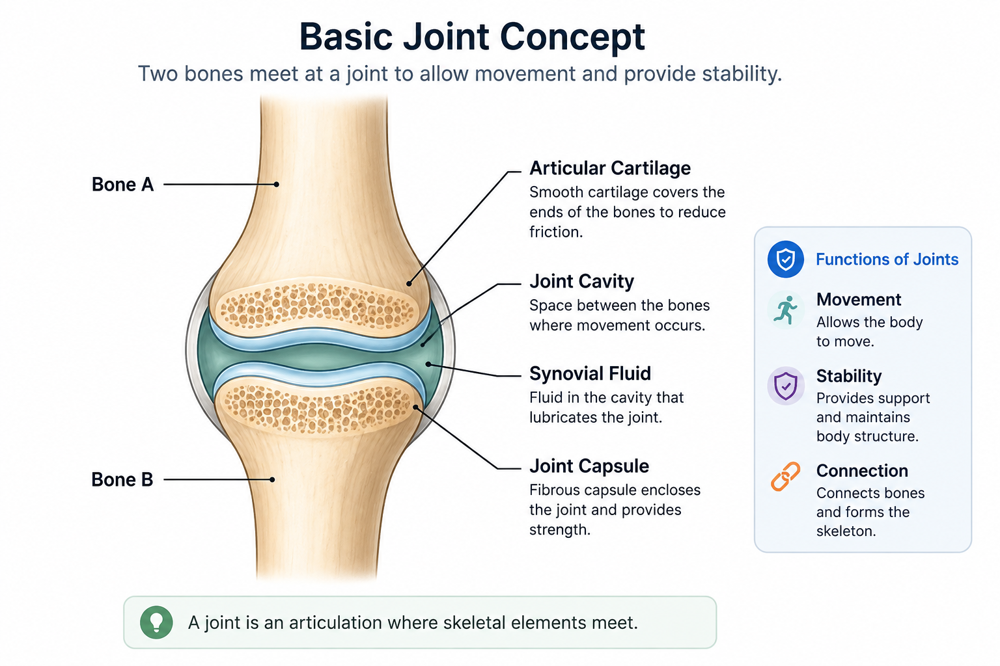
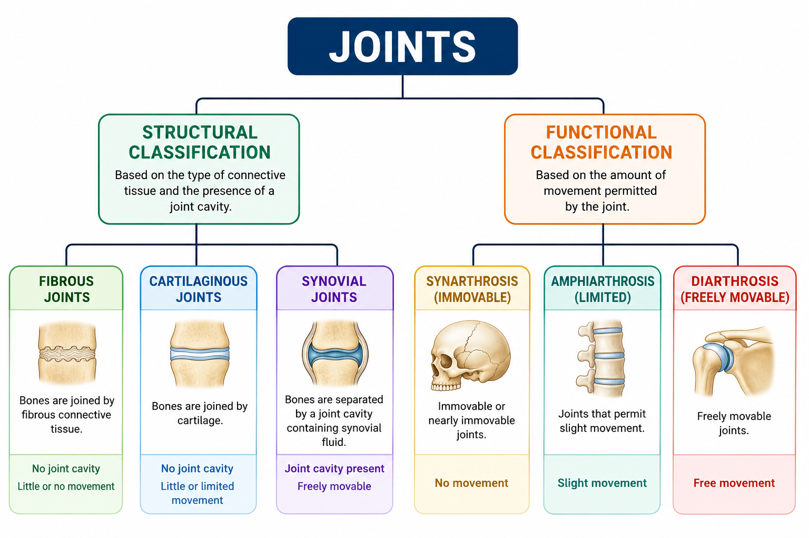
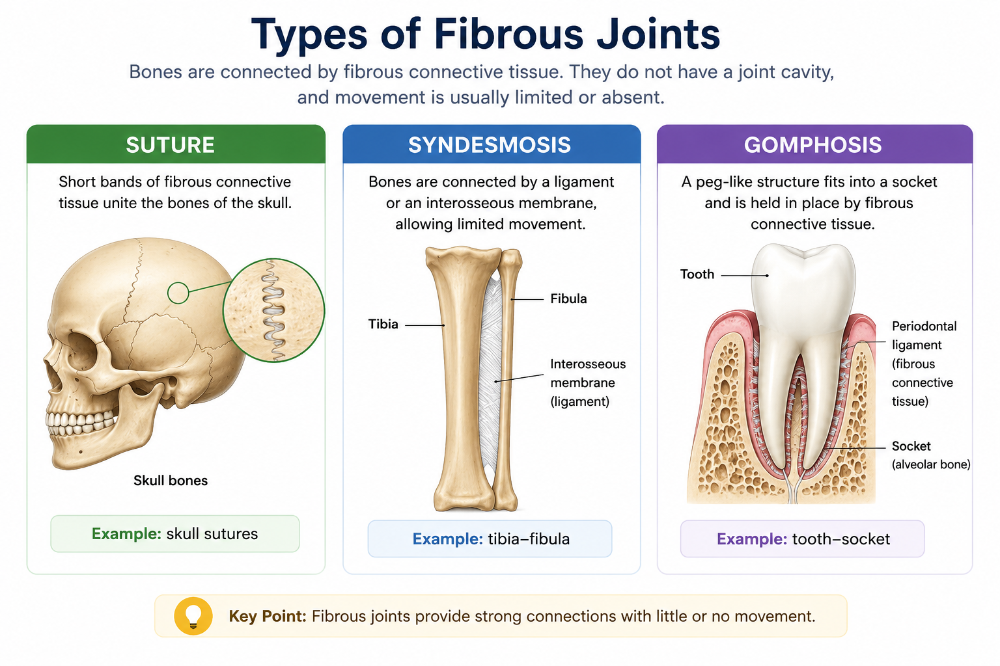
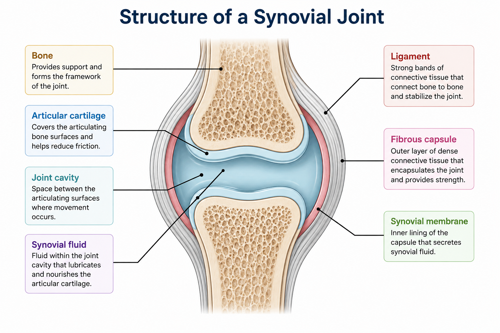
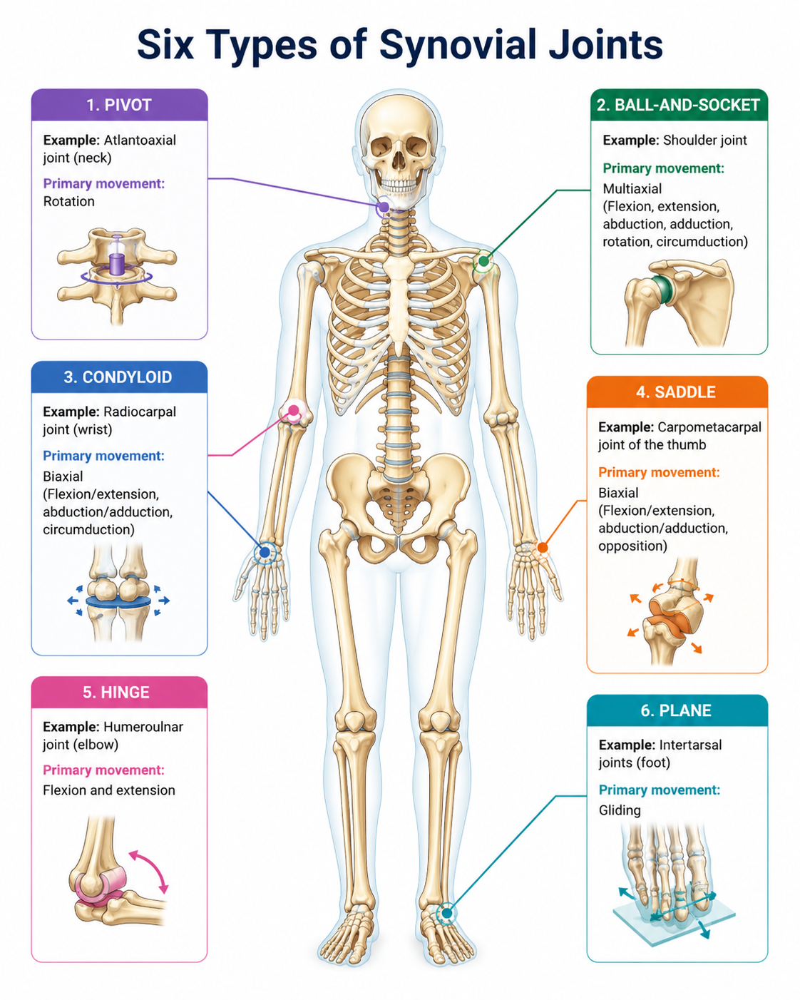
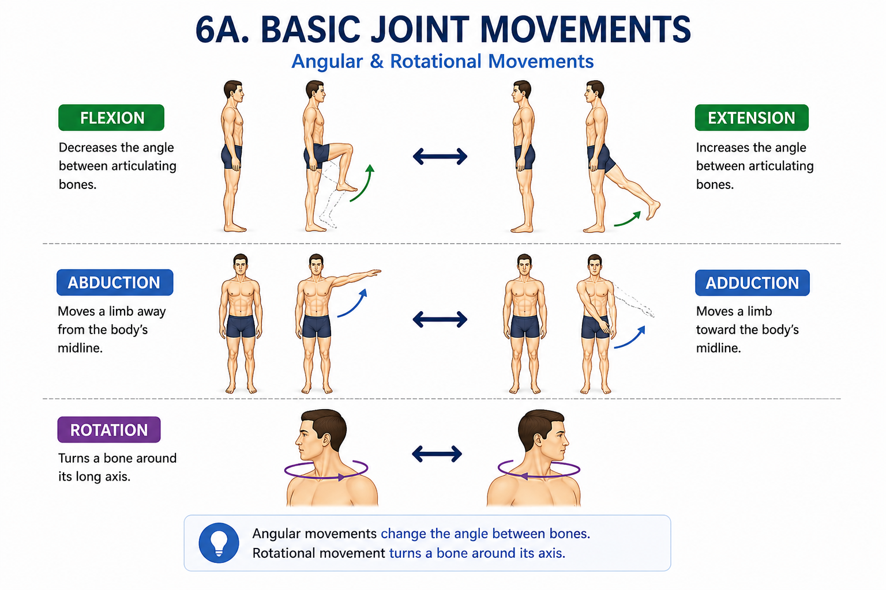
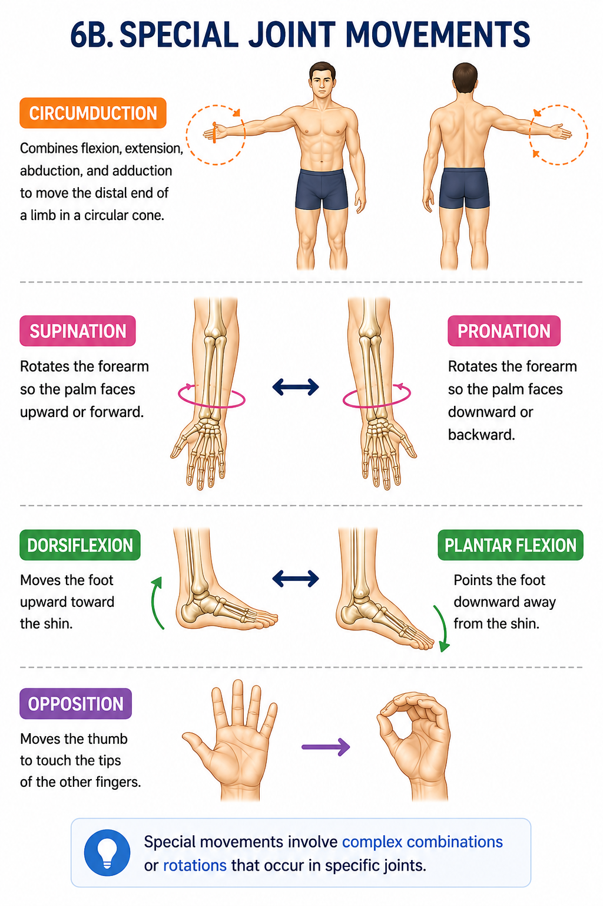

A joint, or articulation, is the place where two or more bones meet.
Joints connect skeletal elements and provide different combinations of
stability and movement.
Joints can be classified by their structure, by the type of tissue that connects
the bones, or by the amount of movement they allow.

A joint is an articulation where skeletal elements meet.
🧩
Classification of Joints
Joints are commonly classified in two complementary ways:
structural classification and
functional classification.
🧱
Structural Classification
Based mainly on the connective tissue joining the bones and whether a joint cavity is present.
🔄
Functional Classification
Based mainly on the amount of movement permitted by the joint.

Structural and functional classifications of joints.
💡
Important distinction:
structural and functional classifications describe different features of a joint.
They should not be treated as a simple one-to-one matching system.
🧵
Fibrous Joints
In fibrous joints, bones are connected by fibrous connective tissue.
They do not have a joint cavity, and movement is usually limited or absent.

Suture, syndesmosis, and gomphosis are the three major types of fibrous joints.
Suture
Short bands of fibrous connective tissue unite the bones of the skull.
Example: skull sutures
Syndesmosis
Bones are connected by a ligament or an interosseous membrane,
allowing limited movement.
Example: tibia–fibula
Gomphosis
A peg-like structure fits into a socket and is held in place by fibrous
connective tissue.
Example: tooth–socket
🧊
Cartilaginous Joints
In cartilaginous joints, bones are connected by cartilage.
These joints allow little or limited movement and are divided into two major types.
Synchondrosis
Bones are connected by hyaline cartilage.
Example: epiphyseal plate
Symphysis
Bones are united by fibrocartilage.
Example: pubic symphysis
Cartilaginous joint types
Type
Connecting material
Example
Movement
Synchondrosis
Hyaline cartilage
Epiphyseal plate
Little or none
Symphysis
Fibrocartilage
Pubic symphysis
Slight
💧
Synovial Joints
Synovial joints are characterized by a
joint cavity between the articulating bones.
They generally permit the greatest range of movement among the three
structural joint classes.

Main structural features of a typical synovial joint.
Articular cartilage
Covers the articulating bone surfaces and helps reduce friction.
Joint cavity
Space between the articulating surfaces.
Synovial fluid
Fluid within the joint cavity that helps lubricate the joint.
Fibrous/ Articular capsule
Surrounds and encloses the joint.
Synovial membrane
Lines the inner surface of the fibrous capsule and contributes to synovial fluid production.
Ligaments
Help reinforce and stabilize the joint.
🔄
Six Types of Synovial Joints
Synovial joints are classified according to the shape of their articulating
surfaces and the movements they permit.

The six structural types of synovial joints, with examples and primary movements.
Synovial joint types, movements, and examples
Type
Main movement
Example
Plane
Gliding
Intercarpal joints
Hinge
Flexion and extension
Elbow
Pivot
Rotation
Atlantoaxial joint
Condyloid
Biaxial movement
Wrist
Saddle
Biaxial movement
Thumb carpometacarpal joint
Ball-and-socket
Multiaxial movement
Shoulder and hip
↔️
Basic Joint Movements
Joint movements describe how bones change position relative to one another.
The major movement groups include angular, rotational, and special movements.

Basic angular and rotational movements of the joints.
Flexion
Decreases the angle between articulating bones.
Extension
Increases the angle between articulating bones.
Hyperextension
Extends a joint beyond the anatomical position.
Abduction
Moves a body part away from the midline.
Adduction
Moves a body part toward the midline.
Rotation
Turns a bone around its longitudinal axis.
Special Joint Movements

Selected special movements of the limbs and other body regions.
Circumduction
Circular movement combining flexion, extension, abduction, and adduction.
Supination
Rotates the forearm so the palm faces anteriorly in anatomical position.
Pronation
Rotates the forearm so the palm faces posteriorly in anatomical position.
Dorsiflexion
Moves the top of the foot toward the shin.
Plantar flexion
Points the foot downward at the ankle.
Elevation & Depression
Move a body part upward or downward.
Protraction & Retraction
Move a body part anteriorly or posteriorly.
Opposition
Moves the thumb across the palm toward the fingers.
⚙️
Functional Classification
Functional classification describes joints according to the degree of movement
they permit.
Synarthrosis
Immovable or nearly immovable joint.
Amphiarthrosis
Joint that permits limited movement.
Diarthrosis
Freely movable joint; synovial joints are functionally diarthrotic.
🧠
Quick Review
Fibrous
Fibrous connective tissue → little or no movement
Cartilaginous
Cartilage → limited movement
Synovial
Joint cavity → freely movable
Hinge
Flexion and extension → elbow
Pivot
Rotation → atlantoaxial joint
Ball-and-socket
Multiaxial movement → shoulder and hip
💡
Remember:
Joint structure influences the kind and range of movement available at an articulation.
❓
Practice Quiz
Ready to test your understanding? Complete the quiz to reinforce this lesson.